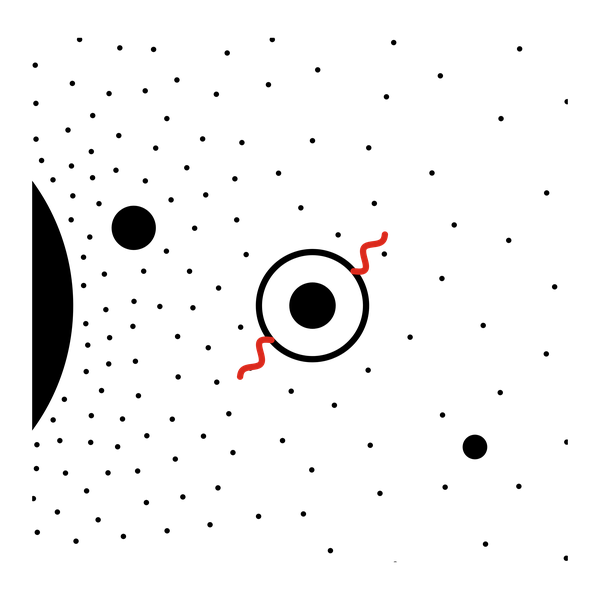

Cuento 7 de 10 · Arco II · Ohr
La zona habitable

Versión sonora en producción. No será este texto leído en voz alta, sino una pieza propia.
Alrededor de cada estrella hay una franja donde el agua puede quedarse líquida. Más cerca, hierve. Más lejos, se congela. Los astrónomos le dicen zona habitable. Yo le digo la orilla tibia.
Tres planetas de roca quedaron cerca de esa orilla. Uno, demasiado adentro: su aire se volvió tan espeso que el calor ya no pudo escapar y hoy sus rocas podrían derretir plomo. Otro, un poco afuera y demasiado pequeño: fue perdiendo su aire y su agua se quedó congelada o escondida bajo el suelo. El tercero quedó en el lugar justo.
Ahí el agua se juntó en mares. Ahí las tormentas duraron siglos. Ahí, en algún charco, en alguna grieta caliente del fondo del océano, nadie sabe todavía dónde, la materia hizo algo que nunca había hecho: empezó a copiarse a sí misma.

No voy a fingir que lo entiendo. Estuve en esa agua, en esas moléculas que se enredaban, y aun así no sé decir en qué momento algo dejó de ser solo química. Hay cosas que ni siquiera yo vi bien.
Pasó mucho tiempo, más de tres mil quinientos millones de años, antes de que alguna de esas copias levantara la cabeza para mirar el cielo. Pero el lugar ya estaba listo.
Me falta contarles algo. Antes de los mares, antes de todo eso, cuando ese planeta era todavía una bola de roca recién hecha, algo del tamaño de otro planeta chocó contra él.
Ese golpe es la razón por la que hoy existe esta historia.